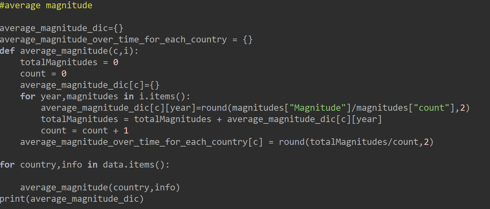

This is the failed code!!
In my website I wanted to give the user a platform where they can easily learn information. For this first I needed to find a dataset that interests me and user. That's how I came up with the idea of the earthquakes in the world. I started to do my project with python and pandas. I cleaned the dataset with pandas by dropping unnecessary columns, removing invalid characters from country names and deleting the unnecessary information (ex. 1990-01-01 00:22:33.990000+00:00 ïƒ 1999). Then send it to Firebase so it will be stored in there. After I cleaned the dataset, I created a new excel file called 'clean_data_year_test.csv'.
I got information from clean csv file and did graphs for average magnitude and average depth. By creating a dictionary called `average magnitude`, I calculated it in a function and for loop. Just to make sure I printed one country in Thonny. After I did the same thing with `average depth`, I started on recommendations that will be on my website.

The first one was experienced_earthquakes. For that I did a function and wrote a for loop so it will count the experienced earthquakes in each country. The second one was strongest_earthquake. There is two code for this. The first code which didn't worked was in `analysed graph data`. I tried to get the strongest earthquake magnitude and country in that year. Although it didn't worked. Then I did it on my cleaning file so the magnitudes will reset. The second one worked better so I send both recommendations to firebase. I also sent average magnitude and average depth calculations on firebase too.


After I did my graphs in python I skipped to JavaScript. I did my graphs on JavaScript too and started to design my website with JS, HTML and CSS on Visual Studio Code.
For my website, I did a navigation bar where users can switch between survey and the main page. I wanted to make it a dark background since it is a dark topic in my opinion. Although I made the graph bars colourful, so it will appear better on the background. At the bottom I put my recommendations
In my survey, after I made a form I did a colourful graph where it displays the information about user and gives them feedback. With that I made my website more functional and better for user.
Architecture diagram
.jpg)
Plan and design flowchart